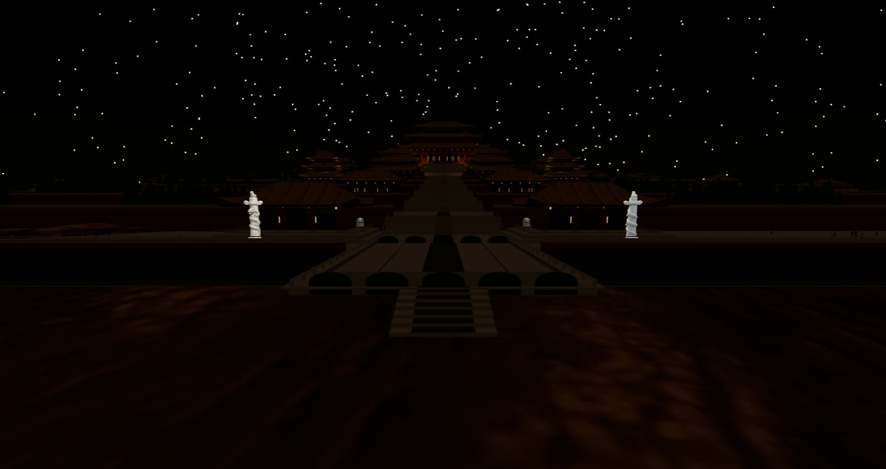
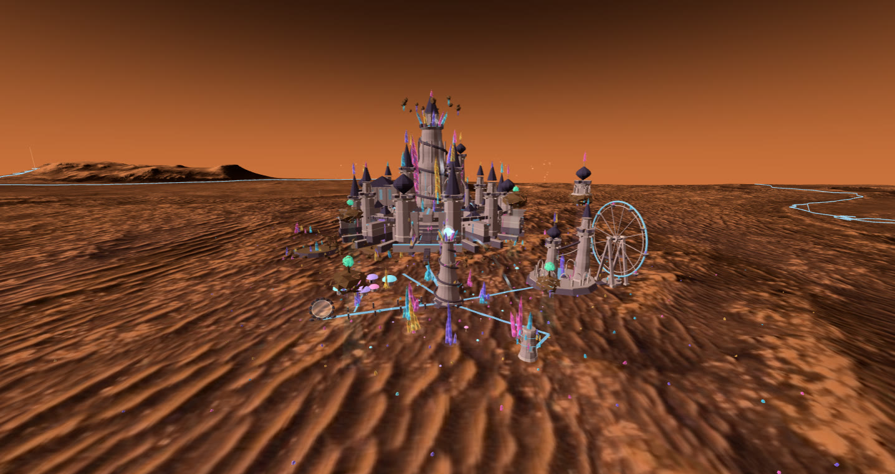

Across the moat at 15:00 LTST — five-arch bridges, the marble huabiao pair,
and the ceremonial axis climbing nine terraces to the summit hall.

Night: warm windows, lantern lines, the huabiao pale under the stars.

Its neighbour world: the crystal castle — one crater, four worlds, four scores.
THE LEDGERa monument is still an engineering deliverable
Envelope1200 × 800 m on nine rising terraces, axis due north, entrance bridge facing the science city
Walkable axis721 m end to end — 16 checkpoints, 0 blocks, every riser 0.599 m against a 0.600 m limit, zero platform gaps
Budget169,012 / 170,000 triangles · 114 / 120 draw calls · 165 fps — tower cap 48.7% of 75%, corner towers 5,132 of 6,000
Score"Dawn Over Marble Terraces" — bianzhong bronze bells, temple drum, and the space between notes
One generatorAll 51 buildings — gates, galleries, bell and drum pavilions, corner towers, the summit hall — derive from a single parametric hall() with terraces and roofs swept from one profile
Five bronzesGuardian lion, huabiao column, censer, turtle, crane — generative sculpture, simplified from up to 1M triangles each into the city budget
Built byAn external coding agent, against the same layer contract as Magic Mars, in six logged stages — accepted at R6 with all four gates green
CollisionThe axis climbs for real: triangle-classified floor and wall grids, stairs mount at 0.65 m step height, zero bytes added to the module